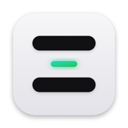
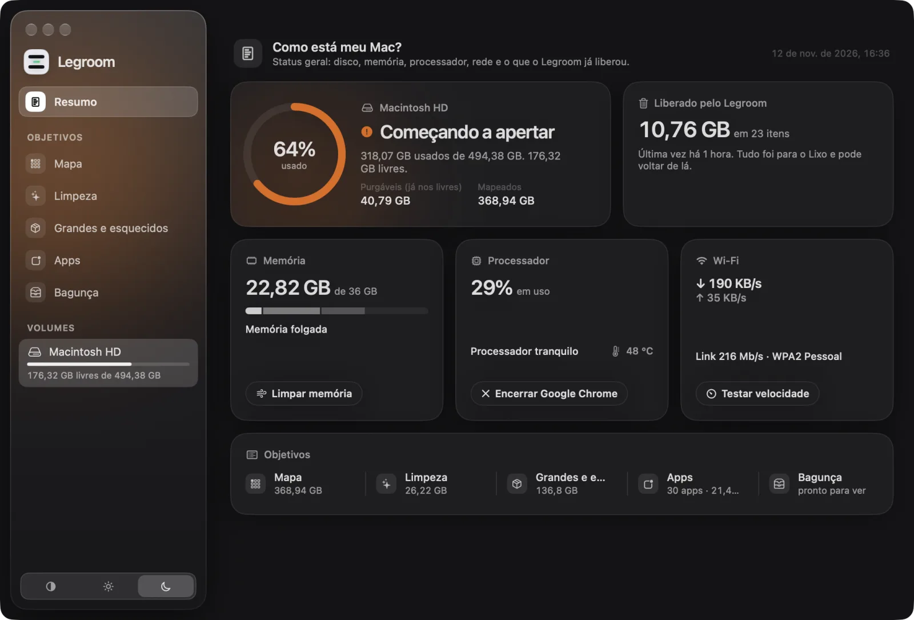
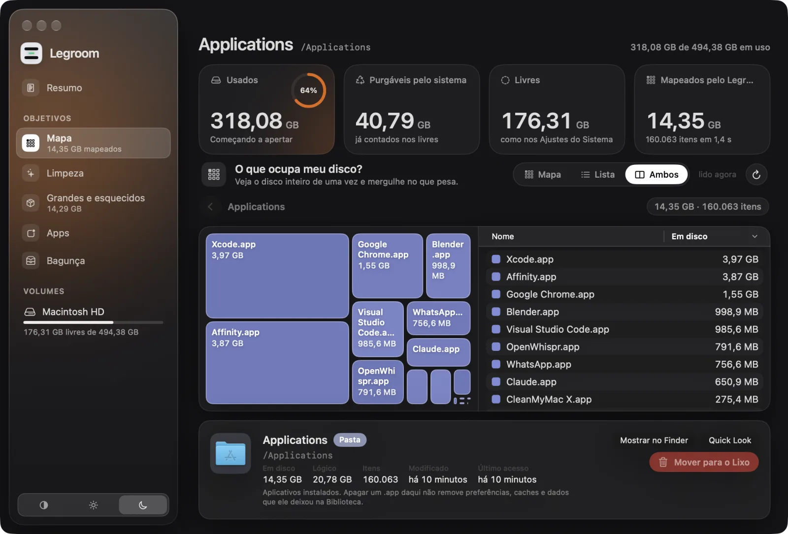
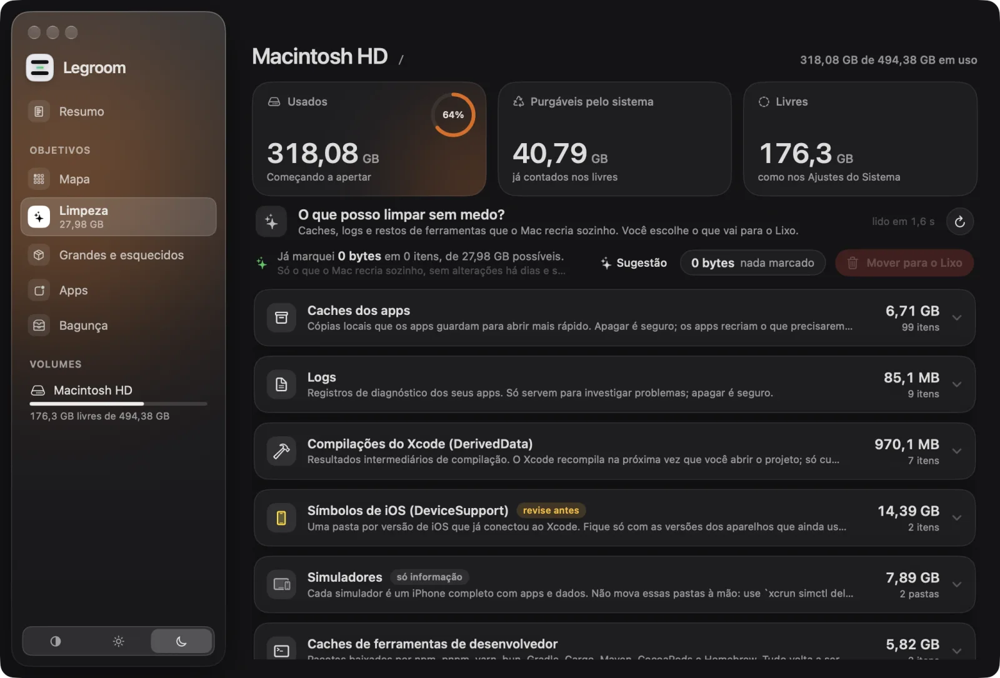
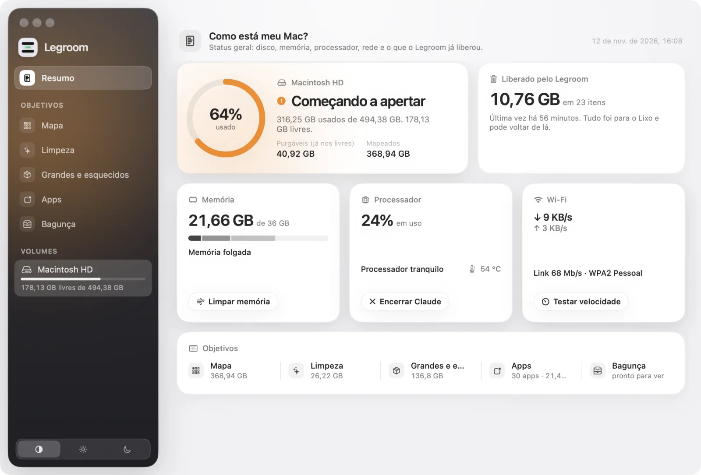

O que ocupa meu disco?
Uma leitura completa em blocos e em lista. A última leitura fica salva e reabre na hora.

Legroom English GitHub BaixarVeja o que ocupa o disco, limpe o que o Mac recria sozinho e desinstale apps por completo. Tudo vai para o Lixo. Nada roda sem você.

Cada tela responde a uma coisa que você quer saber sobre o disco — e lê só as pastas de que precisa.
Uma leitura completa em blocos e em lista. A última leitura fica salva e reabre na hora.
Saúde do disco, memória, processador com a temperatura do chip, rede — e quanto o Legroom já liberou.
O Legroom acha o que o app deixa para trás — dados, caches, preferências, agentes de inicialização, até o instalador em Downloads — e mostra antes de mexer.
Caches, logs e restos de ferramentas que o Mac refaz. Regras abertas em JSON, cada uma com explicação.
Duplicados confirmados pelo conteúdo, downloads esquecidos, instaladores antigos e pilhas de capturas de tela.
Um Resumo compacto na barra de menus e widgets para a Mesa e a Central de Notificações.
SwiftUI nativo, claro e escuro, português e inglês.



Toda leitura começa quando você pede. A principal ainda pede para segurar o botão.
Nada é apagado de vez, e o Legroom nunca esvazia o Lixo.
Caminho completo, tamanho em disco, tamanho lógico, datas — e o que são as pastas conhecidas.
Sem conta, sem análise de uso. A única conexão é o teste de velocidade, quando você clica.
Sem processo auxiliar como root, sem itens de login, sem agentes em segundo plano. Um processo nativo.
▸ Map · full scan of / fts(3) · physical walk · allocated sizes 3,071,882 files · 368.94 GB · 2 min 31 s saved map: 3.97M nodes → 35 MB (LZFSE) ▸ Apps · uninstall Nod dev.nod.desktop + helpers · exact names only ~/.nod-desktop 4.83 GB ~/Library/Application Support/nod 1.88 GB ~/Downloads/nod-arm64.dmg 337 MB → 7 items, 8.1 GB moved to the Trash (never deleted)
fts(3), como o duTamanho alocado, o espaço que realmente volta. Hard links contam uma vez; clones APFS e arquivos esparsos aparecem.
Quatro milhões de nós numa árvore binária compacta, comprimida com LZFSE. Reabre em cerca de um segundo.
Notarizado pela Apple, atualizado com Sparkle e versões assinadas com EdDSA.
O código é aberto
O Legroom tem licença MIT. Veja como funciona, abra uma issue, traduza para o seu idioma ou mande um pull request.
Sim. Sem teste, sem assinatura, sem compras dentro do app. O código está no GitHub, com licença MIT.
O Legroom nunca apaga nada de vez: tudo vai para o Lixo, de onde você pode devolver. É assinado com Developer ID e notarizado pela Apple.
O macOS esconde algumas pastas (Mail, Mensagens, contêineres de apps) de todos os apps. Com o acesso a leitura fica completa; sem ele, o Legroom avisa o que não conseguiu ler.
A App Store exige sandbox, o que impede ler o disco inteiro, listar processos e desinstalar apps por completo.
Legroom › Procurar Atualizações…, ou verificação automática se você permitir. São as mesmas versões notarizadas publicadas no GitHub.